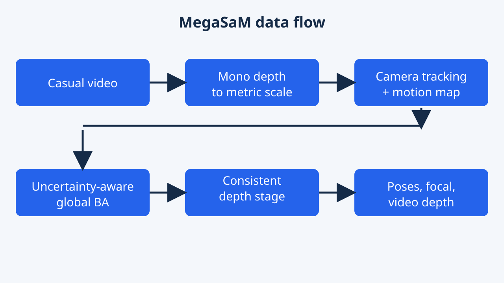
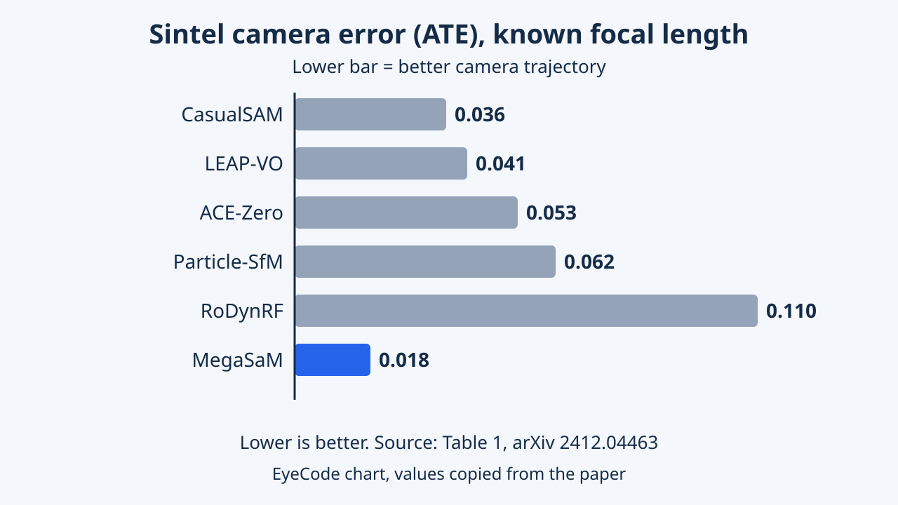
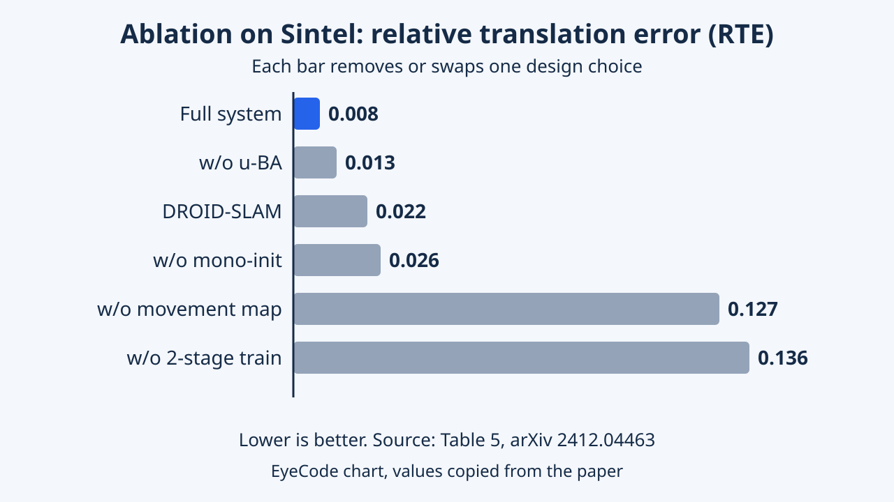

MegaSaM: Accurate, Fast and Robust Structure and Motion from Casual Dynamic Videos
Estimates cameras and depth from casual monocular videos with dynamic scenes and unconstrained camera motion. Training and inference changes to deep visual SLAM address violations of static-scene assumptions.
Casual phone videos often contain moving people and cars and little camera translation, which breaks classical SfM and SLAM. MegaSaM changes the training and inference of a learned SLAM system to cope with these cases. This analysis walks through the problem, method, numbers and limitations.
Overview
Imagine filming a street with your phone while people walk and cars drive by. MegaSaM is a program that watches such a clip and works out where your phone was at every moment and how far away everything is. It does this even when many things in the scene move. CVPR 2025 named it a Best Paper Honorable Mention.
MegaSaM takes an ordinary single-camera video, possibly full of moving people, cars or animals, and estimates three things: the camera pose in every frame, the focal length if it is unknown, and a dense depth map for each frame. It adapts DROID-SLAM, a learned visual SLAM system, so that it keeps working when the scene is not static and when the camera barely translates. A second stage then refines the depth maps so they agree from frame to frame. CVPR 2025 listed the paper as a Best Paper Honorable Mention, which is an official conference recognition. How well it suits your own use case is something to judge from the experiments, not from the award. The authors are from Google DeepMind, UC Berkeley and the University of Michigan. The paper's contributions are a learned movement-probability map with a two-stage training scheme, a monocular-depth initialization, an uncertainty-aware global bundle adjustment, and a consistent-depth step that needs no test-time network fine-tuning.
MegaSaM is a pipeline with two parts: a modified deep visual SLAM system (DROID-SLAM lineage) that returns camera poses in SE(3), an optional focal length and low-resolution disparity, followed by a consistent-video-depth optimization (in the spirit of CasualSAM) that produces full-resolution depth with per-frame uncertainty.
The contribution is not a new backbone but a set of changes to training and inference: a learned object-movement map, a two-stage training recipe, a monocular-depth initialization aligned to metric depth, and an uncertainty-aware global bundle adjustment. The paper reports results on MPI Sintel, DyCheck and 12 in-the-wild videos, and the conference lists the paper as a Best Paper Honorable Mention.
Research Problem
Older methods that recover camera paths assume the world stands still and that the camera moves sideways enough to see things from different angles. Real phone clips break both rules: things move, and people often just turn the camera in place. Newer neural methods are either very slow or fall over on such clips.
Classical structure-from-motion and SLAM assume a mostly static scene and enough parallax, meaning the camera must translate so that near and far points shift differently. Casual videos violate this: objects move, the camera may only rotate, and the field of view is often unknown. Earlier learned alternatives either fine-tune networks on each video, which is slow, or become brittle with unknown focal length, rotation-heavy motion or dominant dynamic content. The task here is: given N frames of a monocular video, output camera poses, focal length when unknown, and per-frame depth, without restricting how the camera or the objects move. Evaluation uses camera pose error and depth error against ground truth where available.
Formally, from N frames the system estimates G_i in SE(3), a focal length f and depth D_i, with no assumptions on camera or object motion. Failure modes the authors target: (1) dynamic pixels that corrupt correspondences in bundle adjustment, (2) near-pure rotation or low-parallax clips where depth is poorly constrained by multi-view geometry, and (3) unknown intrinsics.
Baselines illustrate the landscape: CasualSAM and RoDynRF jointly optimize cameras and geometry through mono-depth networks or instant-NGP; Particle-SfM and LEAP-VO mask moving objects using motion segmentation from long-term trajectories; ACE-Zero targets static scenes via scene-coordinate regression; MonST3R extends DUSt3R to dynamic scenes with pairwise point clouds.
Key Idea
Keep a good camera-tracking engine, but teach it two extra skills: ignore the things that move, and lean on a guess of depth from a single image only when the camera motion alone is not informative enough. Then polish the depth maps so they do not flicker.
The key idea is to keep the strong geometric machinery of DROID-SLAM, with its differentiable bundle adjustment, and change what is fed into it. First, a network predicts a motion probability map so that pixels on moving objects get less weight in the optimization. Second, this network is trained in a separate stage after the camera tracker has already been trained on static data, which the authors say is more stable than learning everything at once. Third, depth predicted from single images is used as an initialization and as a soft regularizer, but its strength is raised only when the system itself reports high uncertainty, for example when parallax is weak.
Three ideas carry the paper. (a) Movement-aware weighting: a network F_m outputs a probability map at 1/8 resolution, multiplying the confidence weights of the flow network inside bundle adjustment. (b) Two-stage training: ego-motion pretraining on static synthetic data, then freezing the tracker and training only F_m on dynamic data with a cross-entropy term alongside the camera loss.
(c) Uncertainty-aware global bundle adjustment: the Hessian of the optimization is used, through a Laplace-style approximation, as a measure of how well depth and focal length are determined. When the Hessian says they are poorly constrained, the weight on monocular depth increases and focal-length refinement can be switched off.
Methodology

The pipeline has steps. First it guesses depth for each frame from one image and rescales it to real-world units. Then it tracks the camera while down-weighting moving things. Finally it cleans up the depth so neighbouring frames agree.
The pipeline has four steps. (1) Single-image depth from Depth Anything is aligned with metric depth from UniDepth by matching medians; UniDepth also supplies an initial focal length. (2) The tracker, a ConvGRU that predicts flow and confidence on a frame graph, is initialized with 8 keyframes using camera-only bundle adjustment, then runs sliding-window optimization with a depth regularizer. (3) A backend runs global bundle adjustment on keyframes, pose-graph optimization for remaining frames, and a final global adjustment over all frames. (4) A consistent depth stage fixes the cameras and optimizes depth and uncertainty with a flow-reprojection loss using RAFT flow, a temporal consistency loss and a depth-prior loss. Training uses 163 TartanAir scenes and 5K static Kubric videos for stage one, then 11K dynamic Kubric videos for stage two.
Tracker and training. Features and context encoders follow DROID-SLAM at 1/8 resolution; the update operator predicts flow, confidence and a damping value for Levenberg-Marquardt. The Schur complement exploits the diagonal disparity block, and focal length is an extra variable. The movement network F_m pools features spatially and then over time across the frame's neighbouring keyframes. Stage one minimizes a camera loss plus a flow loss (weight 0.02); stage two adds a motion cross-entropy (weight 0.1). The pose loss is the norm of the SE(3) log of the ground-truth-to-predicted pose, applied after every bundle-adjustment iteration k with weight 0.9^k (printed as gamma = 0.9^k); the flow loss is the mean l2 difference between predicted and ground-truth induced flow on adjacent frames. Training examples have 7 frames, sampled so that the mean flow between them is 0.5 to 64 px; disparity is normalized so its 98th percentile is 2; initial focal length is perturbed by 25 percent; Adam, about 4 days on 8 A100 80GB GPUs.
Inference. Mono-depth regularization weight is 0.05 in initialization and frontend; in the backend it is gamma 1e-4 times exp(-0.05 times the median Hessian diagonal of disparity), and focal refinement is disabled below a threshold of 50 on its Hessian entry.
Depth stage. Total cost combines flow, temporal and prior terms with weights 1.0, 0.2 and 1.0. The prior is a scale-invariant loss, multi-scale gradient matching and a normal loss (weight 4). Frame pairs use offsets 1, 2, 4, 8 and 15. Unlike CasualSAM, cameras are fixed and no network is fine-tuned; 100 warm-up steps are followed by 400 joint steps.
Experiments & Results
| Method | Calibrated ATE | Calibrated RTE | Calibrated RRE | Uncalibrated ATE | Uncalibrated RTE | Uncalibrated RRE | Time |
|---|---|---|---|---|---|---|---|
| CasualSAM | 0.036 | 0.013 | 0.20 | 0.067 | 0.019 | 0.47 | 1.6m |
| LEAP-VO | 0.041 | 0.023 | 0.17 | - | - | - | 1.3s |
| ACE-Zero | 0.053 | 0.028 | 0.30 | 0.065 | 0.028 | 1.92 | 10s |
| Particle-SfM | 0.062 | 0.032 | 1.26 | 0.057 | 0.038 | 1.64 | 21s |
| RoDynRF | 0.110 | 0.049 | 1.68 | 0.109 | 0.051 | 1.32 | 15m |
| MonST3R | - | - | - | 0.078 | 0.038 | 0.49 | 1.0s |
| MegaSaM (ours) | 0.018 | 0.008 | 0.04 | 0.023 | 0.008 | 0.06 | 1.0s |
| Method | Sintel abs-rel | Sintel log-rmse | Sintel δ1.25 | DyCheck abs-rel | DyCheck log-rmse | DyCheck δ1.25 |
|---|---|---|---|---|---|---|
| DA-v2 | 0.37 | 0.55 | 58.6 | 0.20 | 0.27 | 84.7 |
| DepthCrafter | 0.27 | 0.50 | 68.2 | 0.22 | 0.29 | 83.7 |
| CasualSAM | 0.31 | 0.49 | 64.2 | 0.21 | 0.30 | 78.4 |
| MonST3R | 0.31 | 0.43 | 62.5 | 0.26 | 0.35 | 66.5 |
| MegaSaM (ours) | 0.21 | 0.39 | 73.1 | 0.11 | 0.20 | 94.1 |
| Configuration | ATE | RTE | RRE | Depth abs-rel | Depth δ1.25 |
|---|---|---|---|---|---|
| Droid-SLAM | 0.030 | 0.022 | 0.50 | - | - |
| w/o mono-init. | 0.038 | 0.026 | 0.49 | - | - |
| w/o m^i (no movement map) | 0.032 | 0.127 | 0.14 | - | - |
| w/o 2-stage train. | 0.035 | 0.136 | 0.17 | - | - |
| w/o u-BA | 0.033 | 0.013 | 0.11 | - | - |
| w/ ft-pose | 0.041 | 0.018 | 0.33 | 0.23 | 71.2 |
| w/o new C_prior | - | - | - | 0.36 | 72.5 |
| Full | 0.019 | 0.008 | 0.04 | 0.21 | 73.1 |


On three test sets, the camera paths and depth maps from MegaSaM were closer to the truth than those of the other methods tested, and the method ran at similar or faster speed. Each of its added parts mattered when the authors switched them off one by one.
Camera pose is scored by ATE, RTE and RRE after aligning each trajectory to ground truth; depth by abs-rel, log-RMSE and the fraction of pixels within a 1.25 ratio (delta 1.25). Benchmarks are MPI Sintel, DyCheck and 12 in-the-wild DynIBaR videos, with known (calibrated) and unknown (uncalibrated) focal length. Baselines are CasualSAM, LEAP-VO, ACE-Zero, Particle-SfM, RoDynRF and the concurrent MonST3R; for depth also DepthCrafter and Depth Anything V2. The tables below copy Tables 1, 4 and 5. On Sintel (Table 1), MegaSaM reaches ATE 0.018 calibrated against 0.036 for CasualSAM, and 0.023 uncalibrated against 0.078 for MonST3R. On DyCheck (Table 2) its ATE is 0.020, against 0.062 and 0.056 for the best baseline, ACE-Zero; on the in-the-wild set (Table 3) it is 0.004, against 0.016 for LEAP-VO. For depth (Table 4), Sintel abs-rel is 0.21 against 0.27 for DepthCrafter, and DyCheck abs-rel is 0.11 against 0.20 for Depth Anything V2. Per-frame running time is 0.7 to 1.0 s. In the ablation (Table 5), Sintel RTE rises from 0.008 to 0.127 without the movement map and to 0.136 without two-stage training. Qualitatively, the authors show closer trajectories (Figure 5), more consistent depth (Figure 6), and on rotation-dominant DAVIS clips CasualSAM gives distorted point clouds while MonST3R treats rotation as translation (Figure 7).
Protocol. Ground-truth trajectories are normalized to unit length and estimates are aligned with a global Sim(3) Umeyama fit; depth is aligned with a global scale and shift and points beyond 100 m are excluded. Sintel uses 18 sequences of 20 to 50 images. DyCheck videos have 180 to 500 frames, with refined cameras and sensor depth from Shape of Motion as ground truth. The in-the-wild set has 12 DynIBaR videos of 100 to 600 frames whose ground-truth cameras come from COLMAP run after masking moving objects with instance masks whose IDs were chosen manually. Running time is total time divided by frame count, with all baselines run on one A100. Depth refinement runs at about 1.3 FPS at 336x144 on Sintel, evaluated at 672x288.
Pose results. Table 2 (DyCheck): ATE 0.020 for MegaSaM in both settings versus ACE-Zero 0.062 / 0.056, Particle-SfM 0.081 / 0.087 and CasualSAM 0.185 / 0.209. Table 3 (in the wild): ATE 0.004, versus LEAP-VO 0.016 and CasualSAM 0.031 calibrated, and MonST3R 0.073 uncalibrated. Table 4: delta 1.25 of 73.1 on Sintel (DepthCrafter 68.2) and 94.1 on DyCheck (DA-v2 84.7). The paper contrasts its result with MonST3R, which uses a more recent global point-cloud representation, and still reports better accuracy and robustness.
Ablations (Table 5, Sintel). Reading the rows: without mono-init the ATE rises to 0.038 (Droid-SLAM: 0.030); without the movement map ATE is 0.032 but RTE jumps to 0.127, and without two-stage training 0.035 and 0.136, both far above plain Droid-SLAM (RTE 0.022). Our interpretation: naively adding dynamic data hurts translation more than not training on it, consistent with the authors' remark that joint training is unstable. Always-on mono-depth regularization (w/o u-BA) gives 0.033, 0.013, 0.11 versus 0.019, 0.008, 0.04 for the full system. For depth, refining poses jointly (ft-pose) worsens abs-rel to 0.23 and the CasualSAM-style prior to 0.36 (full: 0.21).
Caveats. The ablation is on Sintel only, whose sequences are short, and the tables carry no error bars. Table 5's Full row prints ATE 0.019 while Table 1 prints 0.018 for MegaSaM on Sintel; the paper does not say which setting Table 5 uses or explain the difference (we suspect rounding or a different run, but this is speculation). The depth table lists DepthCrafter whereas the baseline text names VideoCrafter [20], which looks like a typo.
Limitations
It still gets confused when moving things fill most of the picture, or in selfie-style clips where the person and camera move together. It also assumes the zoom does not change during the clip.
Reported by the authors
The paper has a short Limitations paragraph and Appendix B. Camera tracking fails if moving objects dominate the entire image or if there is nothing for the system to track reliably (Figure 8, top row). It also struggles when camera motion and object motion are colinear, for example the selfie video in the bottom row of Figure 8. The system cannot handle videos with varying focal length or strong radial distortion. The authors note that these failures resemble findings from prior work (CasualSAM) and name better priors from vision foundation models as a promising direction. Failures are shown as visualizations, not as numbers.
EyeCode analysis (editorial interpretation)
Ground truth for the in-the-wild benchmark comes from COLMAP after masking, so it measures agreement with another vision pipeline, not a sensor. The system relies on pretrained Depth Anything, UniDepth and RAFT, and the paper does not study how their errors propagate. Training is synthetic only and the ablation covers one small benchmark.
Reported by the authors
Failure on dominant moving objects or nothing reliable to track (Figure 8, top row); trouble when object and camera motion are colinear (Figure 8, bottom row, a selfie video); no support for varying focal length or strong radial distortion within a video. Intrinsics are modelled as one shared focal length per video, which is why zoom falls outside the model. The authors propose better foundation-model priors as future work.
EyeCode analysis (editorial interpretation)
Dynamic content breaks the weighted bundle adjustment when too few static pixels remain, and a movement map trained on synthetic Kubric motion may not cover every real motion pattern; the paper gives no experiment on this. Colinear motion is ambiguous for any motion segmentation that relies on apparent motion. Dependence on three external pretrained models, mostly synthetic training data and pseudo ground truth on one benchmark are further caveats; runtime comparisons were run by the authors on one A100 with each baseline's public code, so they are not independent.
Key Takeaways
Good old geometry plus a few learned helpers can handle messy phone videos. The helpers decide what to ignore and when to trust a one-image depth guess.
Four points. First, MegaSaM keeps a differentiable SLAM core and fixes its weakness on dynamic video with a movement map and staged training. Second, single-image depth helps as initialization and regularizer, used adaptively by the optimizer's own uncertainty. Third, it beats the listed baselines on pose and depth on three benchmarks at about one second per frame. Fourth, limits remain: dominant motion, colinear motion, changing focal length.
Suggested directions (EyeCode suggestions, not claims from the paper)
- Test clips with zoom or strong distortion to see where the fixed-focal-length assumption begins to fail.
- Swap the mono-depth models and measure how sensitive pose error is to them.
Design lessons from the paper: decouple what is learned (ego-motion first, then the motion mask) to stabilize training; use the optimizer's own curvature as a cheap uncertainty signal that controls priors; fix cameras during depth refinement instead of trading pose for depth fit, as the ft-pose ablation suggests; and combine one mono-depth model for consistency with another for scale.
- Naive training on dynamic data hurts translation: Table 5 shows RTE 0.127 to 0.136 without the movement map or two-stage training.
- Mono-depth regularization should be on only when geometry is weakly observable; always-on gave RTE 0.013 against 0.008.
- Fixing cameras during depth optimization gave better depth (abs-rel 0.21 versus 0.23 with pose fine-tuning).
Suggested directions (EyeCode suggestions, not claims from the paper)
- Quantify how much of the gain comes from the pretrained mono-depth models versus the SLAM changes by swapping them.
- Report per-sequence results and run-to-run variance on Sintel, which the tables do not show.
- Extend the tests to videos beyond 600 frames and to varying focal length.
References
- MegaSaM: Accurate, Fast, and Robust Structure and Motion from Casual Dynamic Videos (arXiv abstract; Tables 1-5 and appendices checked in HTML v1 and v2)
- MegaSaM paper (arXiv PDF)
- MegaSaM, CVPR 2025 open-access page
- MegaSaM supplemental material (CVF)
- MegaSaM project page
- MegaSaM code repository
- CVPR 2025 award listing